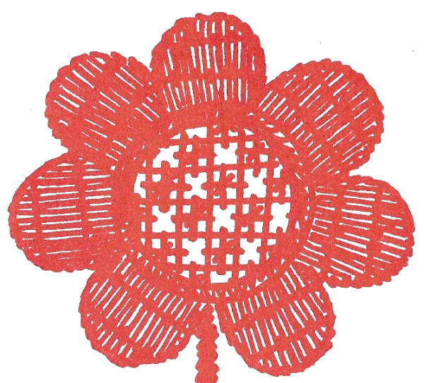

Közérdekű Információk
Egyházfenntartói adomány
A református egyházban az egyházfenntartás összege az éves jövedelem 1%-a.
Az Erdélyi Református Egyházkerület 2026-ra minimum 220 lejt javasol egyházfenntartásként.
Egyházközségünk Presbitériuma tudomásul vette az Erdélyi Református Egyházkerület határozatát, továbbítja a híveknek és szeretettel kéri, hogy püspökségünk döntését karolják fel. Ugyanakkor, megértéssel javasoljuk, hogy 2026-ban min. 180 lejt fizessenek az egyháztagok.

Keresztelések
Tisztelettel kérjük, hogy a keresztelés érdekében jöjjenek be a lelkészi hivatalba, vagy előzetesen egyeztessenek telefonon a titkársággal vagy a lelkipásztorral!
Hitünk szerint gyermekeinket Krisztus parancsa alapján megkereszteljük, és bevesszük az Atya-Fiú-Szentlélek Isten szövetségébe. A gyermek az egyház tagja lesz.
A református egyház rendje szerint a keresztelést templomban végezzük, lehetőleg istentisztelet keretében. Rendkívüli esemény által indokolt helyzetben a keresztelés elvégezhető a templomon kívül is.
Konfirmáció
A konfirmációra VII. osztályos korban kerül sor.
A konfirmálásnak előfeltétele a megkeresztelés, és a két éves felkészítő. A fiatalok VI. és VII. osztályban járnak kátéra.
A református egyház rendje szerint a református egyháztag a konfirmáció által megvallja Istenhez tartozását, és részesül a második sákramentumban, az Úr szent vacsorájában.
A konfirmációi felkészítők mindig ősszel kezdődnek. Az időpontot a templomban hirdetjük.
Kisgyermekek az istentiszteleten
A gyermekeknek a családdal együtt kell megszokniuk a templomi közösséghez való tartozást. Ebben nagy feladat hárul a családra, türelmére, következetességére, hogy a kereszteléskor vállaltakat teljesíteni tudja.
A gyermekek neveltetési mássága, fejlődése és temperamentuma következtében a templomi szoktatás hosszú időt vesz igénybe. A következetes nevelésnek mindig gyümölcse van.
A családokat arra kérjük, felelősségük teljes tudatában figyeljenek arra, hogy gyermekük esetleges hangoskodásával ne zavarják meg az istentiszteletet. Ennek érdekében javasoljuk az összekötőben való ülést, vagy nehezebb helyzetekben a tanácsterembe való átvonulást, esetleg a sétát a templom körül.
Házasságkötés
Tisztelettel kérjük a házasulandókat, hogy házassági szándékuk bejelentése érdekében jöjjenek be a lelkészi hivatalba, vagy előzetesen egyeztessenek telefonon a titkársággal vagy a lelkipásztorral!
Hitünk szerint a házasság egy férfinak és egy nőnek szeretetben fogant döntése alapján köttetik. Református keresztyénekként, döntéseinket Isten elé visszük, színe előtt esküvéssel megerősítjük, és Isten áldását kérjük.
Egyházi törvényeink szerint a házasságkötés helye a templom.
Temetés
Tisztelettel kérjük, hogy elhalálozás esetén a családtagok minél hamarabb vegyék fel a kapcsolatot az egyházzal, a további teendők megbeszélése érdekében!
A református egyházi temetés a vigasztaló Istenre tekint, aki Krisztusban megváltott és számunkra örökélet ígéretét ajándékozta.
Amennyiben az elhunyt személy nem volt hűséges egyháztag, nem járt templomba, nem adományozott egyháza számára, nem támogatta egyházát az éves fenntartói járulékkal, ebben az esetben a legkevesebb elvárása a gyülekezetnek, hogy az egyházi temetést igénylő családtagok nagyobb adományukkal támogassák az egyházközséget, amelynek szolgálatát kérik.
Magyarán mondva: az elhunyt egyházfenntartói tartozását a temetés előtt a hozzátartozóknak törleszteniük kell. Az összeg a ki nem fizetett évek száma szerint változik. Adott esetben 15 év összege is lehet. Mindig az aktuális év fenntartói adományának összegét szorozzuk a hátrálékos évek, és a család felnőtt református tagjainak számával.
Az egyházközségnek temetője nincsen. Elhunyt szeretteinket a város valamely temetőjében helyezhetjük örök nyugalomra. A helyet a családnak kell megkeresnie.
Az Udvarhelyen kívüli temetések nem tartoznak hatáskörünkbe, az udvarhelyi lelkészeknek nem feladatkörük más településen temetni. Amennyiben a család nem Udvarhelyen temetkezik, a helyi egyházközség lelkipásztorával kell megbeszélnie a temetés szolgálatát.